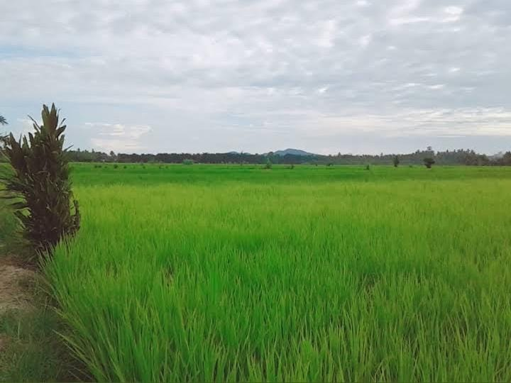
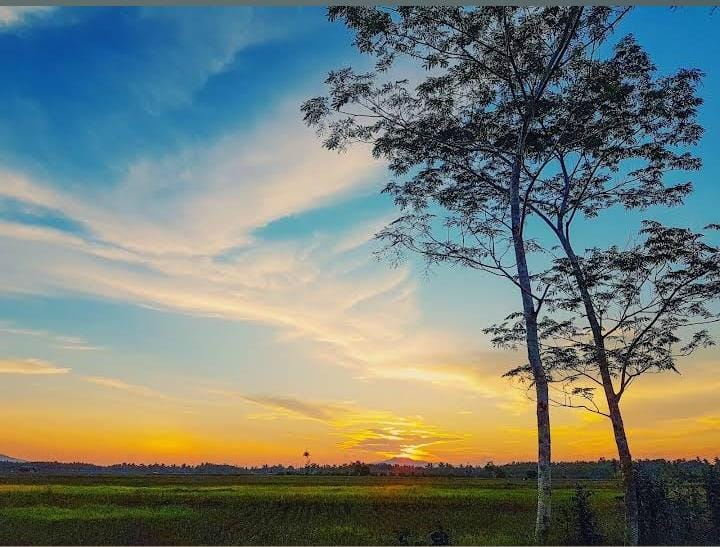
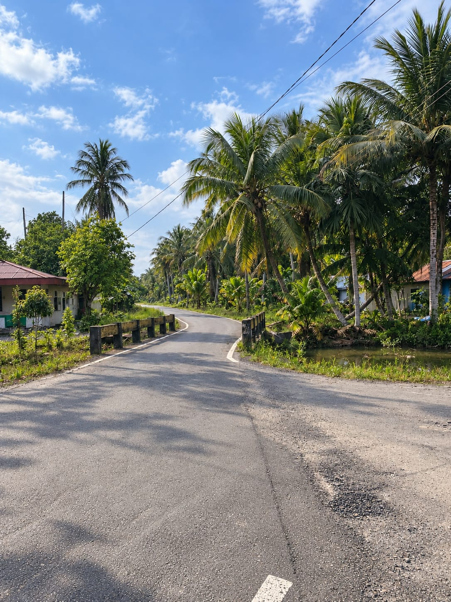
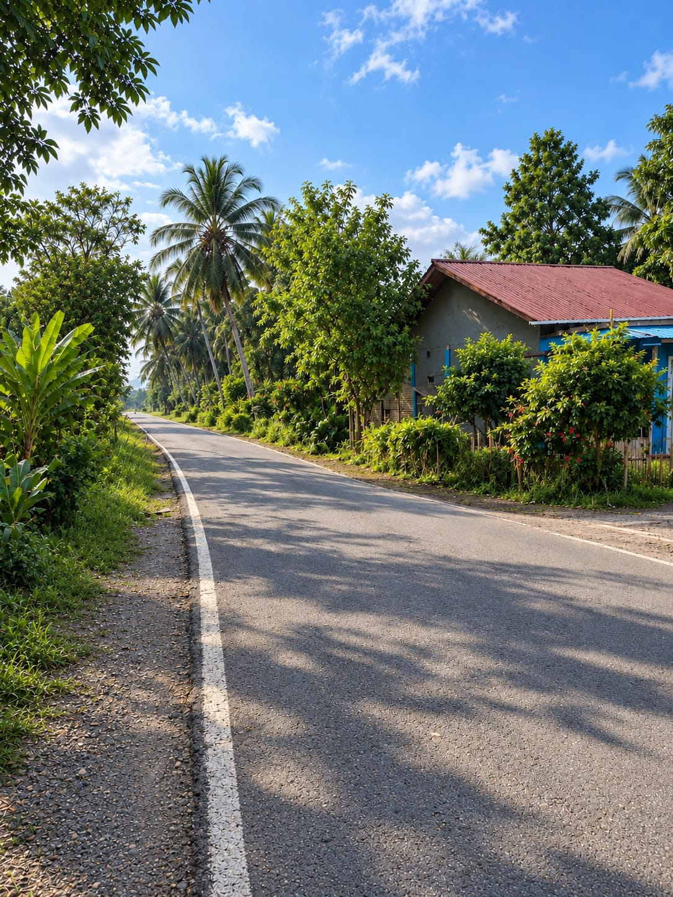
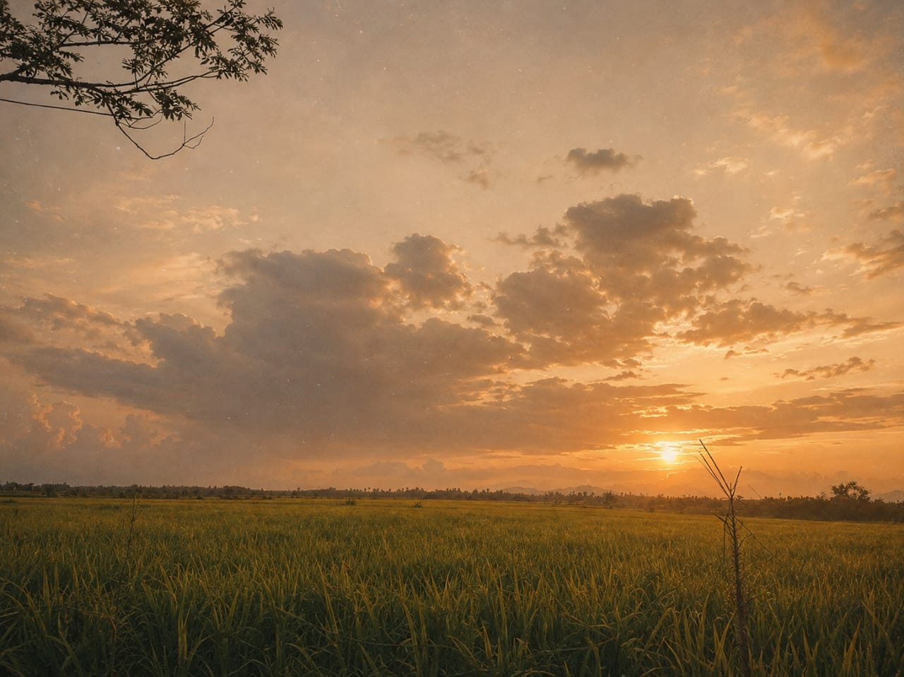
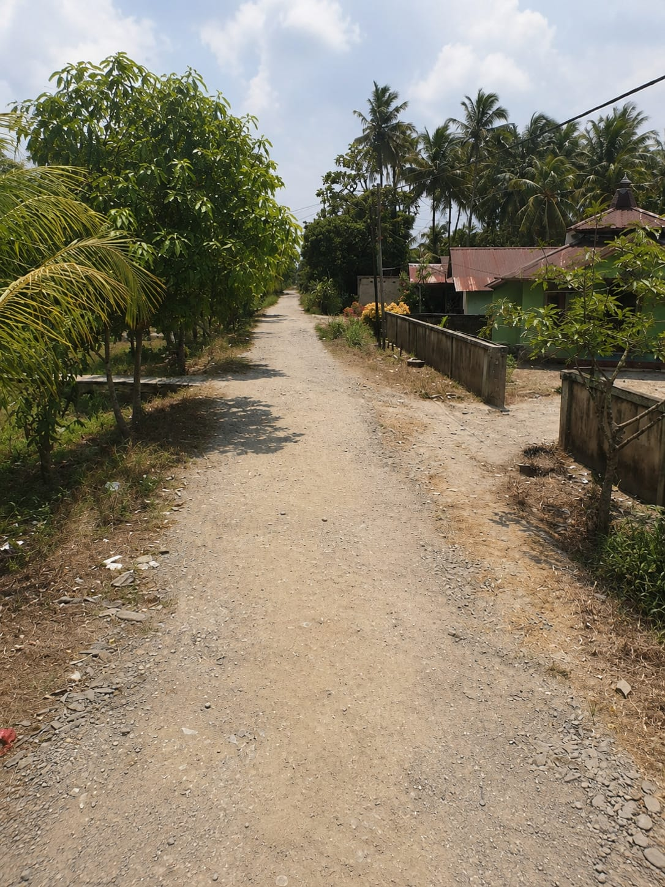
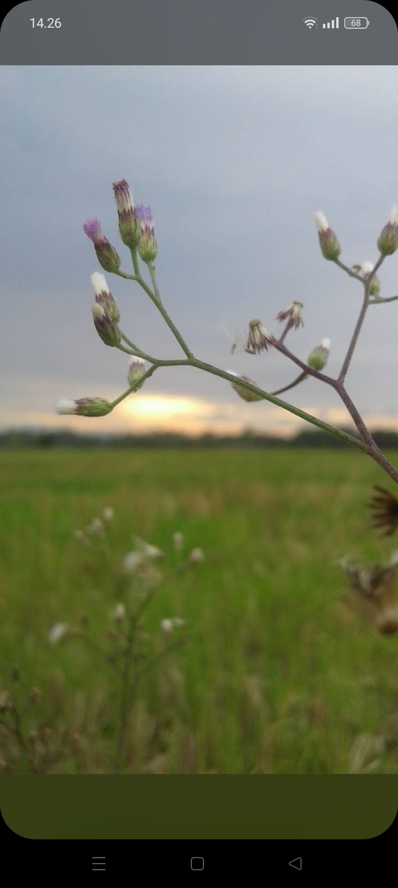

SEPINGGAN KECIL
CERITA DALAM BINGKAI
Setiap foto menyimpan cerita tentang suasana, lingkungan, dan keindahan sederhana Desa Sepinggan Kecil.

Pemandangan hijau yang memberikan suasana sejuk dan alami di desa.

Langit luas dan pepohonan menjadi bagian dari suasana alami desa.

Jalan sederhana yang menghubungkan berbagai sudut kehidupan masyarakat.

Lingkungan hijau dengan pepohonan yang menghadirkan nuansa asri dan tenang.

Cahaya sore yang hangat menjadi salah satu momen indah di desa.

Rumah, pepohonan, dan lingkungan sekitar menggambarkan suasana pedesaan.

Keindahan desa hadir melalui hal-hal sederhana yang ada di sekitar kita.
DESA SEPINGGAN KECIL